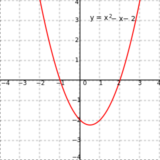
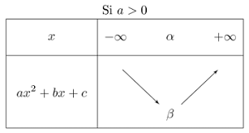
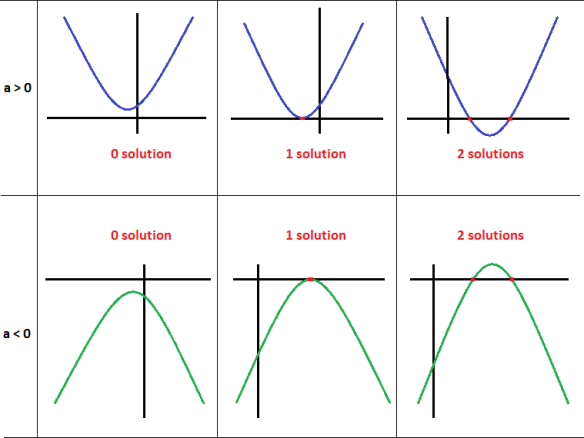

Chapitre 1 : Fonctions polynomiales du second degré
Définition
On dit que f est une fonction polynomiale du second degré définie pour tous x de ℝ par :f(x) = ax

Réprésenté graphiquement, dans un repère orthogonal, une équation du 2nd degré est une parabole
ax2 +bx+c est une équation polynomiale du second degré si et seulement si:
- a ∈ ℝ*
- b ∈ ℝ
- c ∈ ℝ
Forme canonique
Soit f(x) = ax2 +bx+c (a ≠ 0)
Il existe un unique couple de réels (α, β) tel que:
f(x) = a(x-α)2 +β
Il existe un unique couple de réels (α, β) tel que:
f(x) = a(x-α)
Sens de variation
Si x1 < x2
et f(x1 ) < f(x2 ),
alors f est strictement croissant et vice-versa

alors f est strictement croissant et vice-versa
et vice versa si a < 0
Propriété graphique
Chapitre 2 : Équation du second degré
Définition
Équation : une égalité avec un ou plusieurs inconnusÉquation du second degré : une équatioln de la forme:
ax2 +bx+c=0
Le discriminant
Définition : Soit f(x) = ax2 +c
Le discriminant de f est le nombre: b2 -4ac
On le note: Δ.
Δ = b2 -4(a)(c)
Résolution
Soit (E) = axSoit Δ = b
-b-√Δ
2a
-b+√Δ
2a
Interprétation graphique
Soit f(x) = ax
D'autres équations
Chapitre 3 : Les probabilités
L
: L barre, contraire de LLes probabilités conditionnelles
Définition: Soit A et B, deux évènements avec (A ≠ ∅)La probabilité que l'évènements B se réalise sachant que l'évènements A s'est déja réalisé se note P
et se lit P de B sachant A.
PA (B) =
Avec A ≠ 0 et B ≠ 0
P(A∩B) = PA (B) x P(A)
P(A∩B) = PB (A) x P(B)
P(A∩B)
P(A)
Avec A ≠ 0 et B ≠ 0
Indépendance
Soit A et B, deux évènements.
A et B sont indépendants si P(A∩B) = P(A) x P(B)
A et B sont indépendants si P(A∩B) = P(A) x P(B)
Si A et B sont indépendants et non vides
Alors, PA (B) = P(B)
Alors, P
La loi des probabilités totales